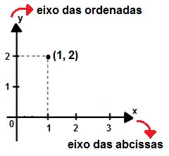
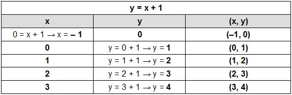

"Plano Cartesiano → é o ambiente onde o gráfico será construído. Ele é estabelecido pelo encontro dos eixos cartesianos x e y, conhecidos como eixo das abcissas e eixo das ordenadas, respectivamente. Cada ponto do gráfico é conhecido como par ordenado, pois ele é formado pelo encontro de um valor das abcissas com um valor das ordenadas. A linha que une os pares ordenados é conhecida como curva da função.
 "Para iniciar a construção do gráfico, é necessário escolher valores para a variável x. Esses valores serão substituídos na lei de formação da função para que o valor correspondente de y seja determinado, bem como o par ordenado. Para montar o gráfico de uma função do 1° grau, é necessário encontrar apenas dois pontos que já visualizamos no gráfico." "É também importante escolher valores próximos, como números subsequentes. Além disso, é sempre bom saber os pontos em que x = 0 e y = 0 (zero da função). Considere a função y = x + 1. Montaremos uma tabela com os valores de x para encontrar os valores de y:" 